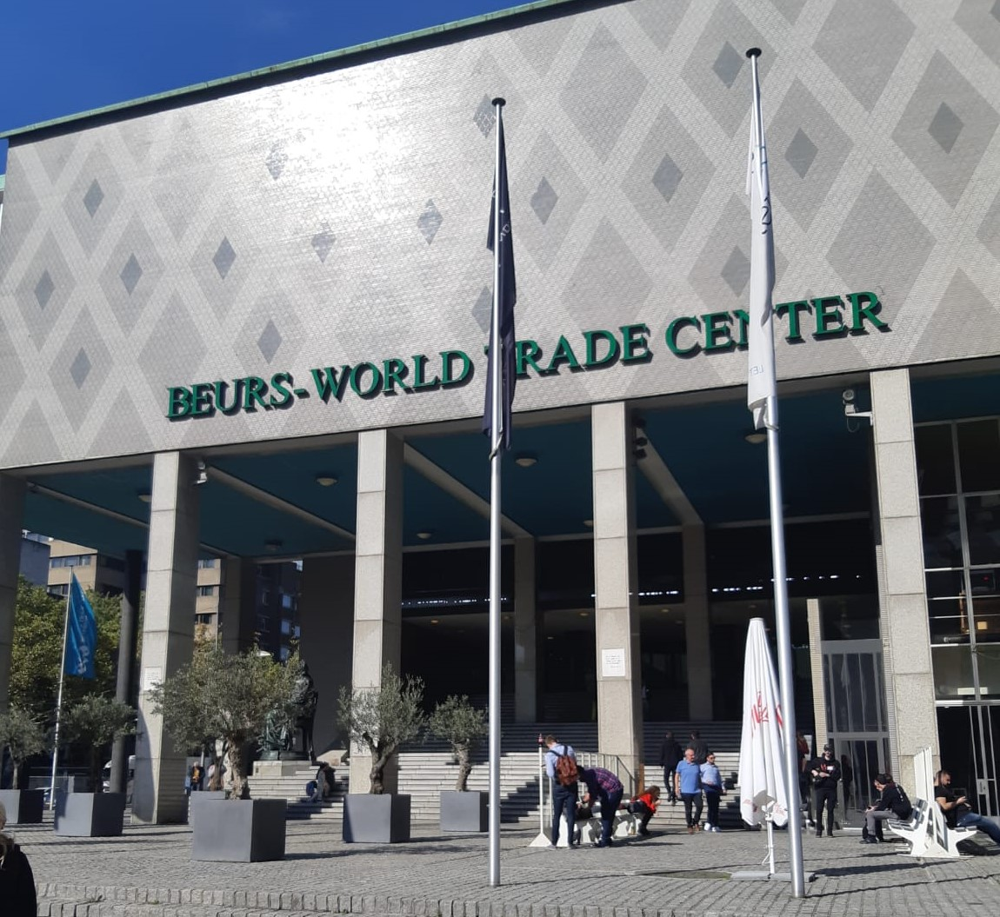
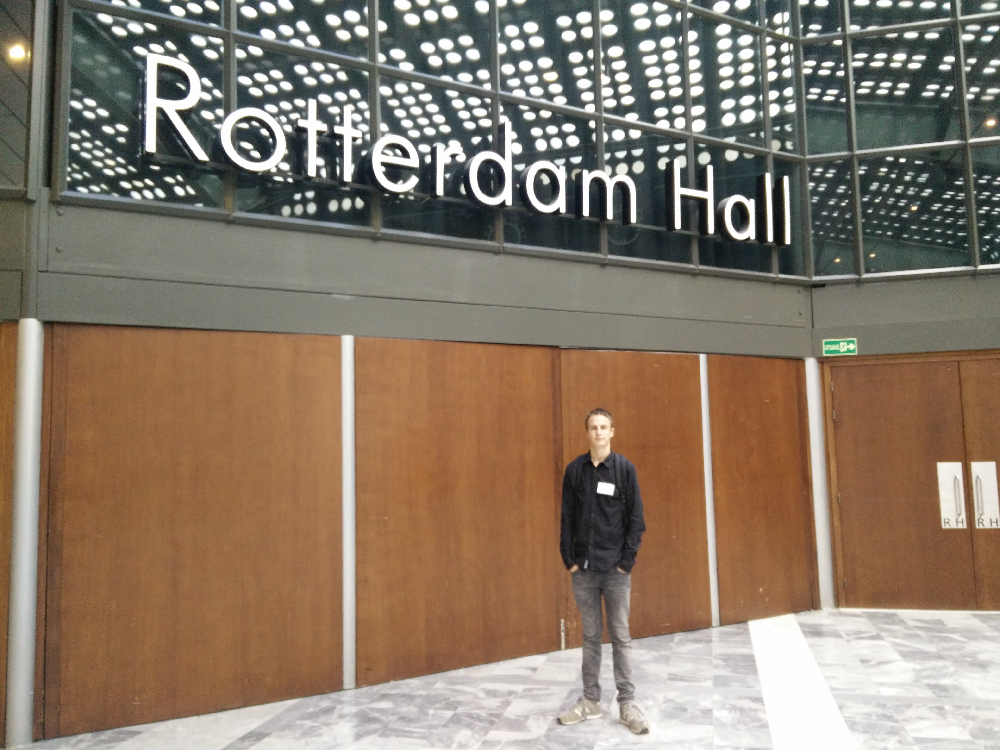
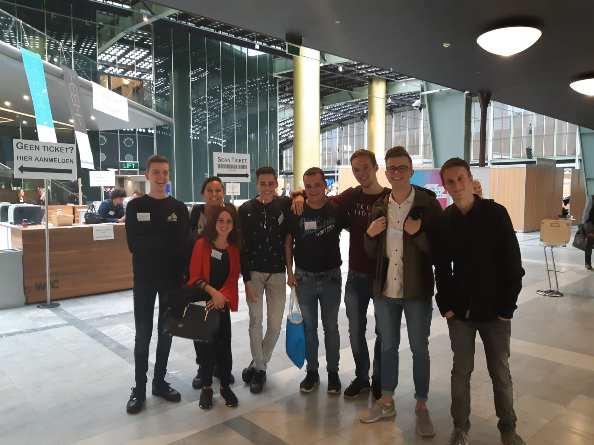
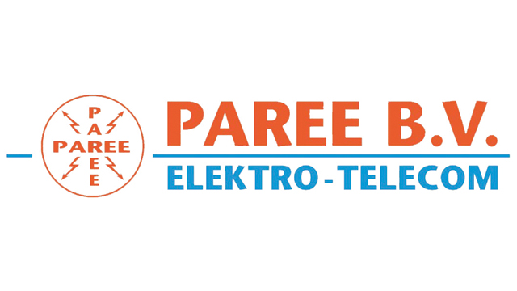
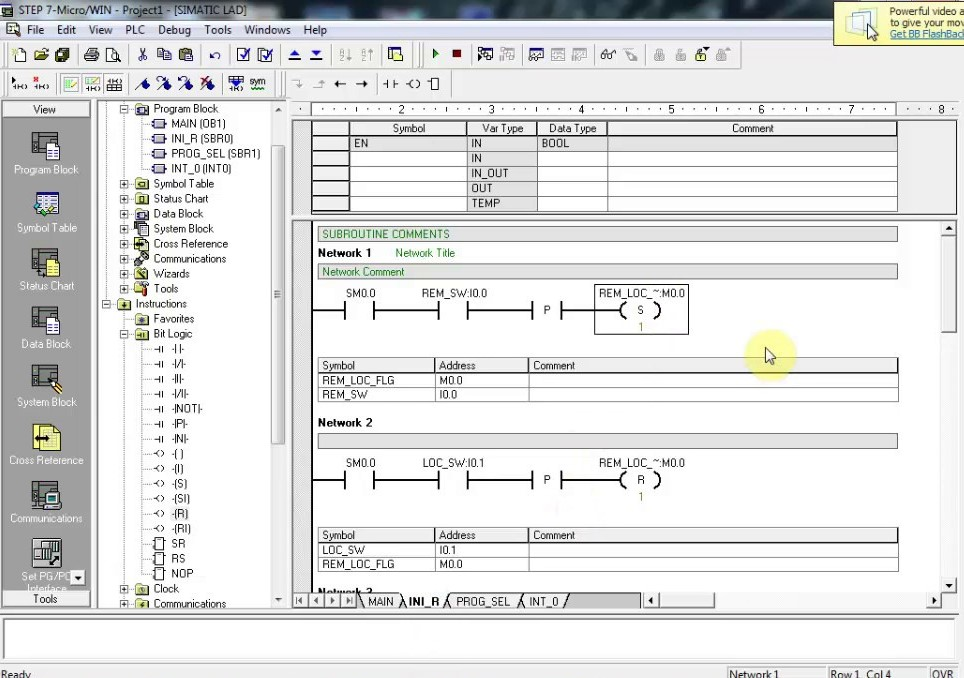

Op vrijdag 5 oktober zijn we naar het HBO-I Job Event geweest in het World Trade Center in Rotterdam. Hier heb ik de mogelijkheid gekregen om veel verschillende organisaties te leren kennen en te vragen welke technieken zij gebruiken.
  
Het eerste bedrijf waar ik ben gaan kijken was het Ministerie van Defensie. Het Ministerie van Defensie is een instantie van de Rijksoverheid. De manier waarop zij anders zijn dan andere bedrijven is de bedrijfscultuur. Als je voor Defensie wilt gaan werken wordt je eerst controleerd of je geen strafblad hebt. ICT'ers bij Defensie werken vrij weinig in oorlogsgebied, maar ze hebben wel een grote verantwoordelijkheid voor de militairen die zich daar wel bevinden.
Het CBS (Centraal Bureau voor de Statistiek) is het bureau dat verantwoordelijk is voor de productie van nationale statistieken en van Europese statistieken. Om deze statistieken te produceren verzamelt het CBS gegevens bij personen, bedrijven en instellingen. De ICT-functies die CBS heeft zijn onder andere software-architect, cross-platform appontwikkelaar en data-analist. De technieken waar ze bij het CBS gebruik van maken zijn Xamarin en C#.
Verder heb ik nog gesproken van iemand van de Rijksoverheid. De functies die zij in de functiegroep ICT & Techniek hebben zijn rijksmedewerker, projectmanager, programmadirecteur en programmamanager. De vrouw waarmee ik sprak was heel onduidelijk in haar antwoord over welke technieken gebruikt worden bij de Rijksoverheid en zei dat dit verschilt per functiegroep.
Axians is een IT-bedrijf dat complete oplossingen biedt voor bedrijven om meer inzicht te geven door het verzamelen van data. Bij Axians zijn ongeveer 9000 werknemers actief. De functies die zij hebben zijn onder meer business intelligence consultant, data scientist, netwerk engineer en programmeur. De technieken die toegepast worden bij Axians zijn de scrum methode (voor planning), Python, MariaDB, SQL Server, Java en C#.
Rockstars IT is een detacheringsbedrijf dat ICT-ers helpt kennis en ervaring op te doen en helpt contact te zoeken met bedrijven. De functies die Rockstars IT heeft zijn detachering, event-organisator, carriere-manager en persoonlijk begeleider. De technieken die zij gebruiken zijn Java, Blockchain, Microsoft Azure en Scala.

Omdat ik op de dag van de bedrijvensafari verhinderd was, ben ik zelf op bezoek geweest bij Paree BV in 's-Heerenhoek op 1 oktober. Paree BV is een familiebedrijf dat elektro en telecom levert aan andere bedrijven en ze daarin ook ondersteunt. De afdelingen die ze hebben zijn Industriele automatisering, Elektro, Beveiliging, Telecom, IT, Internet of Things, Zorgsystemen en Domotica. De laatste vier afdelingen vind ik zelf het meest interessant. Omdat Paree meestal een totaaloplossing (bijvoorbeeld het beveiligingssysteem van de COVRA) levert, overlappen de afdelingen veel. Dat zie je ook terug in het gebouw, want de ruimtes zijn meer globaal verdeeld onder de afdelingen. Als de verschillende afdelingen samen werken aan een project is het natuurlijk niet handig als de werknemers in verschillende ruimtes zitten.

Paree BV heeft ongeveer 160 werknemers in dienst, waarvan het grootste deel (elektro-)monteur is. De ICT-functies de Paree heeft zijn helpdeskmedewerker IT en software engineer. De technieken die de software engineers gebruiken zijn PLC en SCADA. Ik heb daar ook iemand gesproken die ingezet wordt als niemand anders binnen het bedrijf het probleem opgelost krijgt. Hij had heel afwisselend werk, want er waren dagen dat hij zelfs op een booreiland bezig was.
Ik heb ook nagedacht wat mijn voorkeuren zouden zijn voor een toekomstig beroep. Die voorkeuren heb ik in deze volgorde gezet: